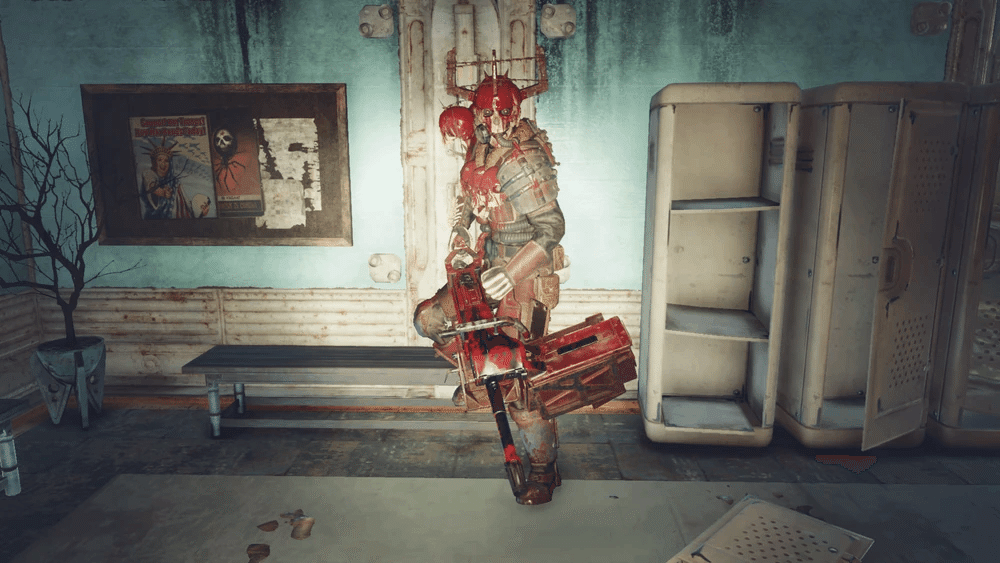

繝悶Λ繝・ラ繝ｻ繧､繝ｼ繧ｰ繝ｫ
繝悶Λ繝・ラ繝ｻ繧､繝ｼ繧ｰ繝ｫ縺ｮ襍ｷ貅舌↓縺､縺・※縺ｯ縺・￥縺､縺九・遏帷崟縺後≠繧翫√い繝代Λ繝√い縺ｮ繧ｦ繧ｧ繧､繧ｹ繝医Λ繝ｳ繝繝ｼ縺ｮ髢薙〒蝎ゅ・遞ｮ縺ｨ縺ｪ縺｣縺ｦ縺・∪縺吶・br>縺ゅｋ閠・・縲∝ｽｼ繧峨′蜿､縺・ヰ繧､繧ｫ繝ｼ繧ｮ繝｣繝ｳ繧ｰ縺九ｉ遶ｯ繧堤匱縺励√え繧ｧ繧､繧ｹ繝医Λ繝ｳ繝峨・隱ｰ縺ｨ繧ょ暑莠ｺ縺ｫ縺ｪ繧九▽繧ゅｊ縺後↑縺・・縺縺ｨ荳ｻ蠑ｵ縺励※縺・∪縺吶・br>縺励°縺励√％縺ｮ繧ｮ繝｣繝ｳ繧ｰ縺ｮ蜈・Γ繝ｳ繝舌・縺ｧ縺ゅｋ繝吶こ繝・ヨ縺ｯ縲∝ｽｼ繧峨′隧先ｬｺ蟶ｫ繧・◎縺ｮ莉悶・迥ｯ鄂ｪ閠・◆縺｡縺ｮ縺ｼ繧阪⊂繧阪・繧ｰ繝ｫ繝ｼ繝励↓繧医▲縺ｦ邨先・縺輔ｌ縺溘→隱槭▲縺ｦ縺・∪縺吶・br>繧・′縺ｦ縲√ぐ繝｣繝ｳ繧ｰ蜀・↓謔ｪ諢上・縺ゅｋ荳豢ｾ縺悟ｽ｢謌舌＆繧後∝・驛ｨ縺九ｉ諤･騾溘↓謾ｯ驟肴ｨｩ繧呈詞謠｡縺励∪縺励◆縲・br>縺薙ｌ繧臥┌諷域ご縺ｪ譌･蜥瑚ｦ倶ｸｻ鄒ｩ閠・◆縺｡縺後∫樟蝨ｨ繧ゅぐ繝｣繝ｳ繧ｰ縺ｮ謖・ｰ朱Κ縺ｨ縺励※蜷幄・縺励※縺・∪縺吶・/p>
縺昴ｌ莉･譚･縲∝ｽｼ繧峨・谿矩・縺ｧ繧ｵ繝・ぅ繧ｹ繝・ぅ繝・け縺ｪ繝ｬ繧､繝繝ｼ縺ｮ霆埼嚏縺ｨ縺ｪ繧翫・103蟷ｴ譎らせ縺ｧ繧｢繝代Λ繝√い譛螟ｧ縺ｮ謨ｵ蟇ｾ蜍｢蜉帙→縺励※縲・strong>遨咲・縺ｮ螻ｱ縲・strong>闕偵ｌ縺溷｢・沺縲√け繝ｩ繝ｳ繝吶Μ繝ｼ貉ｿ蜴溘・螟ｧ驛ｨ蛻・↓讓ｩ蛻ｩ繧剃ｸｻ蠑ｵ縺励※縺・∪縺吶・br>蝨ｰ蝓溘↓轤ｹ蝨ｨ縺吶ｋ螟壹￥縺ｮ蜿､縺・Ξ繧､繝繝ｼ繧ｭ繝｣繝ｳ繝励ｒ蜀榊茜逕ｨ縺励√◎縺ｮ閹ｨ螟ｧ縺ｪ謨ｰ縺ｨ繝上う繝・け蜈ｵ蝎ｨ縺ｫ繧医▲縺ｦ縲∝ｽｼ繧峨↓蜻ｳ譁ｹ縺励↑縺・☆縺ｹ縺ｦ縺ｮ莠ｺ縲・↓縺ｨ縺｣縺ｦ邨ｶ縺磯俣縺ｪ縺・у螽√→縺ｪ縺｣縺ｦ縺・∪縺吶・br>蠖ｼ繧峨・縺励・縺励・縲√ン繝・げ繝ｻ繝吶Φ繝峨・繝医Φ繝阪Ν繧帝夐℃縺吶ｋ繝悶Ν繝ｼ繝ｪ繝・ず繝ｻ繧ｭ繝｣繝ｩ繝舌Φ遉ｾ縺ｮ雋ｿ譏馴嚏繧堤佐迚ｩ縺ｨ縺励∬・繧峨・鬆伜悄繧帝夐℃縺吶ｋ縺ｮ繧帝仆豁｢縺吶ｋ縺溘ａ縺ｪ繧我ｽ輔〒繧ゅ＠縺ｾ縺吶・/p>
2103蟷ｴ縺ｾ縺ｧ縺ｫ縲√ム繧ｬ繝ｼ縺ｨ縺・≧螂ｳ諤ｧ縺ｫ邇・＞繧峨ｌ縺溘ぐ繝｣繝ｳ繧ｰ縺梧ｲｼ蝨ｰ蝨ｰ蟶ｯ縺ｮ蟾｣遯溘↓遘ｻ蜍輔＠縲√ず繧ｧ繝九・繝ｻ繝悶Λ繧ｦ繝ｳ縺ｮ譚代°繧臥黄雉・・謳ｾ蜿悶ｒ蟋九ａ縺ｾ縺励◆縲・br>蛻･縺ｮ莠倶ｻｶ縺ｧ縺ｯ縲√ち繝ｪ繝ｼ繝ｻ繝ｩ繝ｳ繧ｰ縺ｨ縺・≧蛻･縺ｮ螂ｳ諤ｧ縺ｫ邇・＞繧峨ｌ縺溘げ繝ｫ繝ｼ繝励′ Vault 96 縺ｫ荵ｱ蜈･縺励√・繝ｫ繧ｭ繝｣繝・ヨ繧定ｿｽ霍｡縺励※ Vault 縺ｮ逡･螂ｪ繧定ｩｦ縺ｿ縺ｾ縺励◆縲・br>繧ｿ繝ｪ繝ｼ縺ｮ繧ｰ繝ｫ繝ｼ繝励・譛邨ら噪縺ｫ蜀・Κ縺ｫ髢峨§霎ｼ繧√ｉ繧後ｋ縺薙→縺ｫ縺ｪ繧翫∪縺励◆縲・br>2104蟷ｴ縲√Λ繧ｹ繝医・繧､繝ｼ繧ｰ繝ｫ縺後Γ繧ｿ繝ｫ繝峨・繝縺ｧ蜑｣髣伜｣ｫ縺ｮ謌ｦ髣倥ｒ髢句ぎ縺怜ｧ九ａ縲・strong>Vault 螻・ｽ剰・ｄ B.O.S.縺ｮ謌ｦ螢ｫ縺溘■縺悟盾蜉縺励∪縺励◆縲・br>2105蟷ｴ蛻晞ｭ縲∽ｸ驛ｨ縺ｮ 繝悶Λ繝・ラ繝ｻ繧､繝ｼ繧ｰ繝ｫ縺後い繝代Λ繝√い縺ｮ蛹玲擲縺ｮ隗偵↓縺ゅｋ蟆丞ｱ九↓遘ｻ蜍輔＠縲√◎縺薙〒繝槭う繧｢繝ｩ繝ｼ繧ｯ繧貞ｮｶ逡懷喧縺励※縺・∪縺吶・/p>
譁・喧
繝悶Λ繝・ラ繝ｻ繧､繝ｼ繧ｰ繝ｫ縺ｯ縲√◎縺ｮ驕主臆縺ｪ證ｴ蜉帙∈縺ｮ蛯ｾ蜷代°繧我ｻ冶・°繧牙玄蛻･縺輔ｌ縺ｦ縺・∪縺吶・br>蠖ｼ繧峨・豬∬｡繧呈･ｽ縺励∩縲∬・蛻・・螳牙・繧帝｡ｧ縺ｿ縺壹↓謾ｻ謦・ｒ莉墓寺縺代※縺阪∪縺吶・/p>
髫主ｱ､縺ｨ遶ｶ莠・/h3>
縺ｩ縺ｮ繧医≧縺ｪ繧､繝ｼ繧ｰ繝ｫ繧ゅ∬・蛻・◆縺｡縺ｮ驕ｸ繧薙□繧ｲ繝ｼ繝縺ｧ繧医ｊ鬮倅ｽ阪・繝｡繝ｳ繝舌・縺ｫ豁｣蠑上↓謖第姶縺吶ｋ縺薙→縺ｧ縲・嚴螻､繧帝ｧ・￠荳翫′繧九％縺ｨ縺後〒縺阪∪縺吶・br>縺薙ｌ繧峨・繧ｲ繝ｼ繝縺ｯ逵溷殴縺ｫ蜿励￠豁｢繧√ｉ繧後∽ｸ肴ｭ｣縺ｯ荳蛻・ｨｱ縺輔ｌ縺ｾ縺帙ｓ縲・br>謨苓・′鬮倅ｽ阪・繝｡繝ｳ繝舌・縺ｧ縺ゅｋ蝣ｴ蜷医∬・逋ｺ逧・↓騾縺九↑縺代ｌ縺ｰ縺ｪ繧峨★縲∵拠蜷ｦ縺励◆蝣ｴ蜷医・蜃ｦ蛻代＆繧後∪縺吶・br>蠖ｼ繧峨・縲後じ繝ｻ繝悶Λ繝・ラ縲阪√後じ繝ｻ繧｢繧､縲阪√後じ繝ｻ繧ｯ繝ｭ繧ｦ縲阪→縺・≧3莠ｺ縺ｮ蠑ｷ蜉帙↑繝ｪ繝ｼ繝繝ｼ縺ｫ繧医ｋ荳我ｺｺ菴灘宛縺ｧ邇・＞繧峨ｌ縺ｦ縺・∪縺吶・/p>